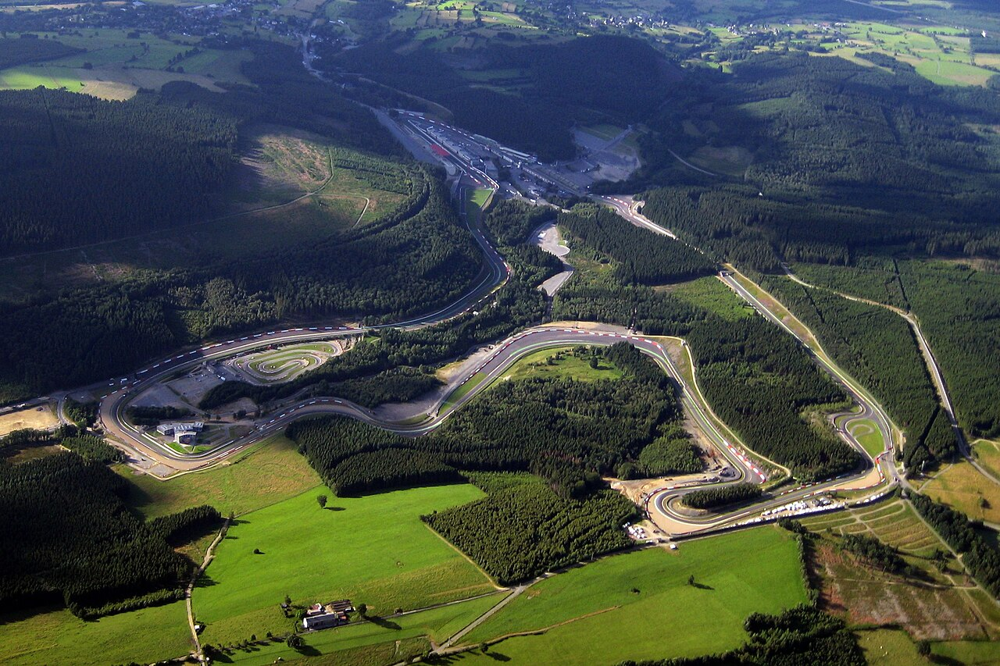

PREVIA
Preparativos para las 6 Horas de Spa
Los equipos afinan el setup para el clima impredecible de Bélgica. El análisis previo indica que la carga aerodinámica media será la opción más segura para los Hypercars.